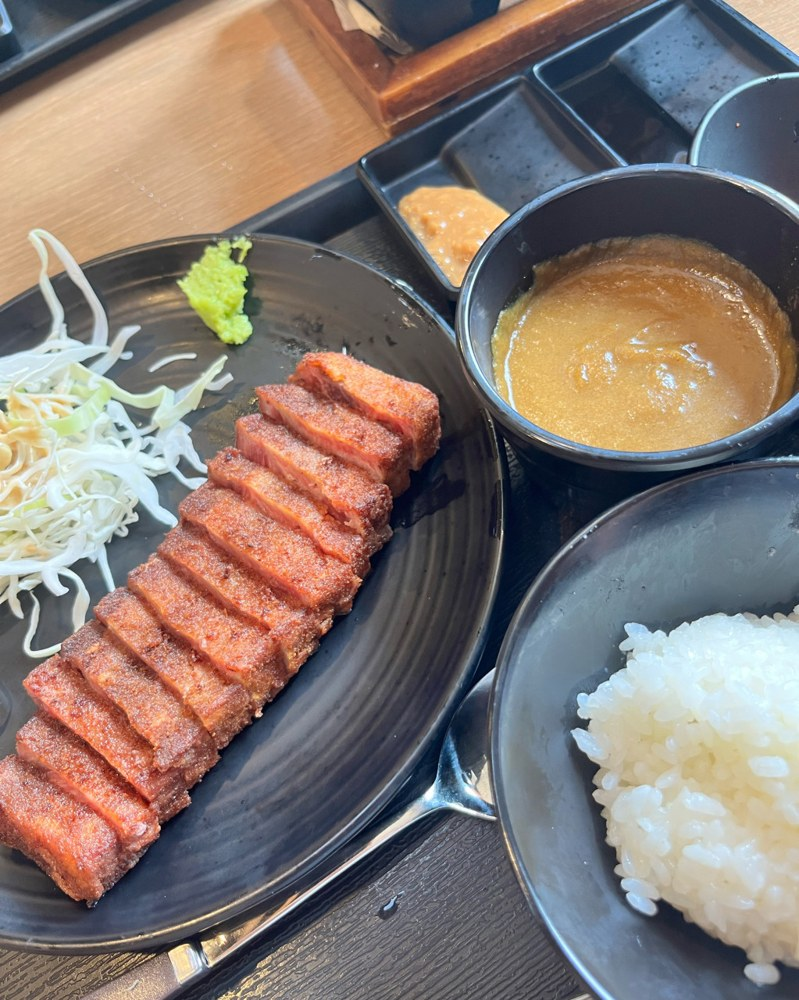
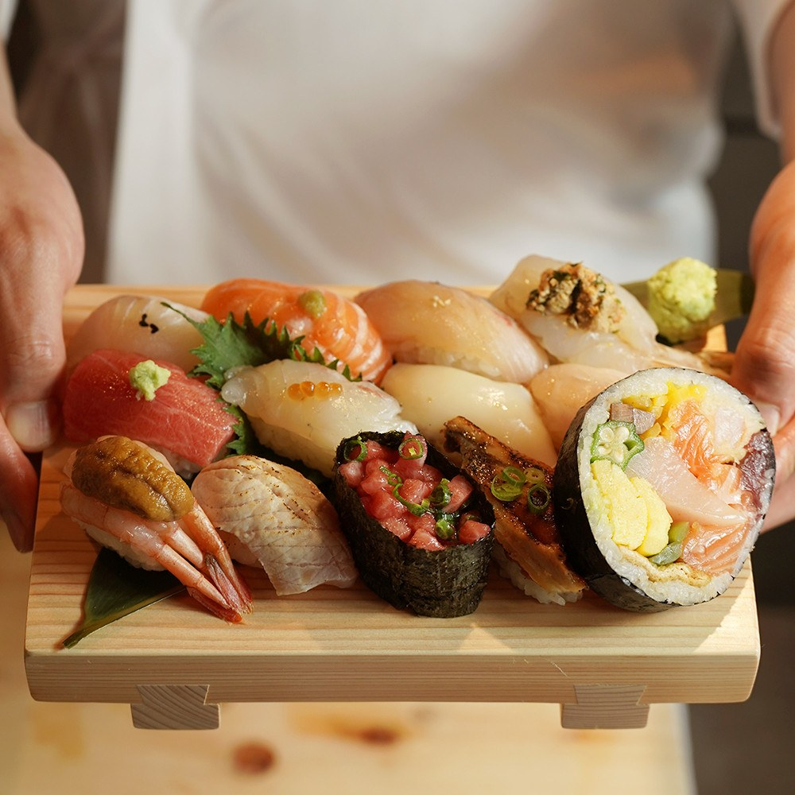
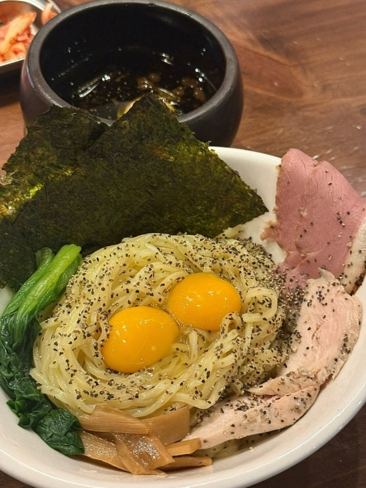
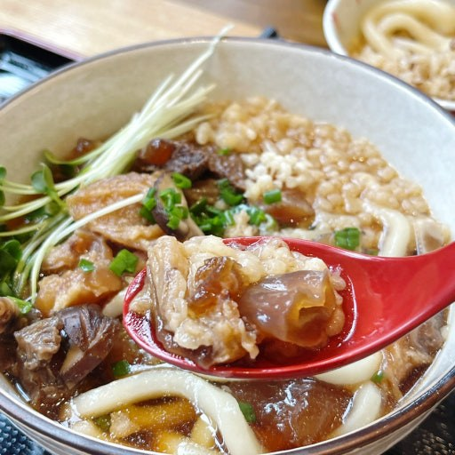
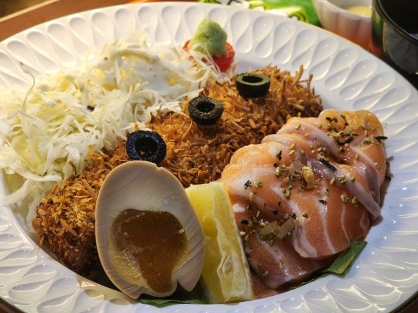

POHANG FOOD MAP
POHANG FOOD MAP
POHANG FOOD MAP
POHANG FOOD MAP
초밥, 돈카츠, 카레까지 깔끔한 한 끼를 위한 일식 맛집입니다.

바삭한 규카츠와 일본식 정식 메뉴를 즐기기 좋은 곳입니다.
📍 경북 포항시 북구 삼호로 238 1층

신선한 초밥과 깔끔한 일식 한 끼를 찾는 사람에게 추천합니다.
📍 경북 포항시 남구 효자동길2번길 3 효자역전종합상가 1층

라멘과 덮밥을 가볍게 즐기기 좋은 효자동 일식 맛집입니다.
📍 경북 포항시 남구 효자동길7번길 5-1 1층

두툼한 돈카츠가 생각날 때 방문하기 좋은 일식 맛집입니다.
📍 경북 포항시 북구 해안로445번길 13 1층

수제 초밥과 사시미를 즐기기 좋은 효자동 초밥집입니다.
📍 경북 포항시 남구 효성로60번길 8 101호

일본식 카레와 감성적인 분위기를 함께 즐길 수 있는 곳입니다.
📍 경북 포항시 북구 학전로 142 1층

효자시장 근처에서 연어 메뉴를 찾을 때 보기 좋은 일식집입니다.
📍 경북 포항시 남구 효자동길6번길 18